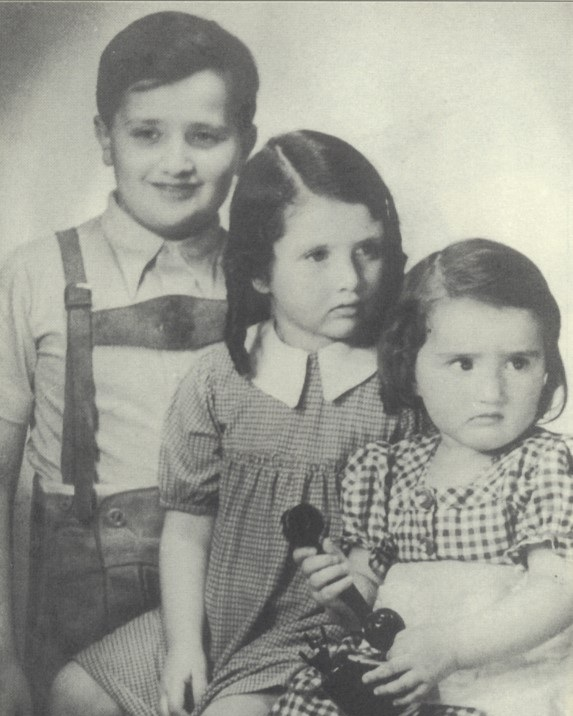

Portrait d’archive
Enfants Krochmal
Liane KROCHMAL
Liane KROCHMAL est née le 25/07/1937 à Vienne en Autriche.
Rassemblée à Lyon, elle est déportée à Auschwitz le 13/04/1944 par le convoi n°71.
Dernière adresse connue : (Izieu)
Nom : KROCHMAL
Prénom(s) : Liane
Date naissance : 25/07/1937
Âge (ans) : 6
Lieu naissance : Vienne
Pays ou département : Autriche
Lieu rassemblement : Lyon
Dernière adresse : ?
Ville : Izieu (Ain)
Code postal : 01300
N° Convoi : 71
Date déportation : 13/04/1944
Informations diverses : En 1938, Yaakov et Amalie Krochmal-Kolboshover fuient l'Autriche pour la Belgique avec leurs trois enfants, Siegfried (né en 1931), Rénate (née en 1935) et Liane (née en 1937). Jacob avait un frère et une sœur aux Etats-Unis mais les tentatives effectuées pour obtenir des permis de séjour pour sa famille et pour lui-même se révèlent infructueuses. La famille Krochmal est arrêtée et internée dans le camp de concentration de Rivesaltes, où Siegfried périt. Ses parents sont transférés à Drancy et en septembre 1942, ils sont déportés à Auschwitz, où ils sont assassinés. On ne sait ni quand ni comment Rénate et Liane sont arrivées à la maison d'enfants d'Izieu mais elles sont arrêtées au cours de la descente et déportées avec tous les autres enfants de l'établissement vers les camps d'extermination d'Europe de l'Est où elles seront assassinées (Source: YVS)
Krochmal (Liane), née le 25 juillet 1937 à Vienne (Autriche), décédée le 18 avril 1944 à Auschwitz (Pologne). JO
Lieu de déportation : Auschwitz
Lieu de départ : Drancy
Nombre total de déporté·e·s du convoi : 1500
Gazé·e·s à l'arrivée : 1265 (84,3 %)
Survivant·e·s en 1945 : 128 (8,5 %)
Renate KROCHMAL
Renate KROCHMAL est née le 03/09/1935 à Vienne en Autriche.
Rassemblée à Lyon, elle est déportée à Auschwitz le 13/04/1944 par le convoi n°71. Elle est morte en déportation.
Dernière adresse connue : (Izieu)
Nom : KROCHMAL
Prénom(s) : Renate
Date naissance : 03/09/1935
Âge (ans) : 9
Lieu naissance : Vienne
Pays ou département : Autriche
Lieu rassemblement : Lyon
Dernière adresse : ?
Ville : Izieu (Ain)
Code postal : 01300
N° Convoi : 71
Date déportation : 13/04/1944
Informations diverses : En 1938, Yaakov et Amalie Krochmal-Kolboshover fuient l'Autriche pour la Belgique avec leurs trois enfants, Siegfried (né en 1931), Rénate (née en 1935) et Liane (née en 1937). Jacob avait un frère et une sœur aux Etats-Unis mais les tentatives effectuées pour obtenir des permis de séjour pour sa famille et pour lui-même se révèlent infructueuses. La famille Krochmal est arrêtée et internée dans le camp de concentration de Rivesaltes, où Siegfried périt. Ses parents sont transférés à Drancy et en septembre 1942, ils sont déportés à Auschwitz, où ils sont assassinés. On ne sait ni quand ni comment Rénate et Liane sont arrivées à la maison d'enfants d'Izieu mais elles sont arrêtées au cours de la descente et déportées avec tous les autres enfants de l'établissement vers les camps d'extermination d'Europe de l'Est où elles seront assassinées (Source: YVS).
Krochmal (Rénate), née le 3 septembre 1935 à Vienne (Autriche), décédée le 18 avril 1944 à Auschwitz (Pologne). JO
Lieu de déportation : Auschwitz
Lieu de départ : Drancy
Nombre total de déporté·e·s du convoi : 1500
Gazé·e·s à l'arrivée : 1265 (84,3 %)
Survivant·e·s en 1945 : 128 (8,5 %)